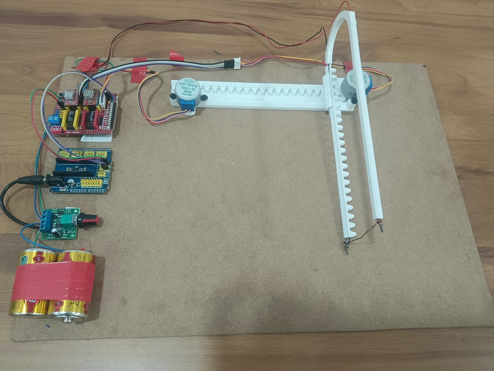
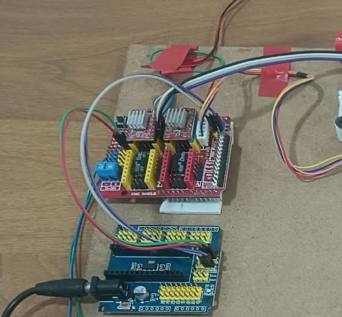
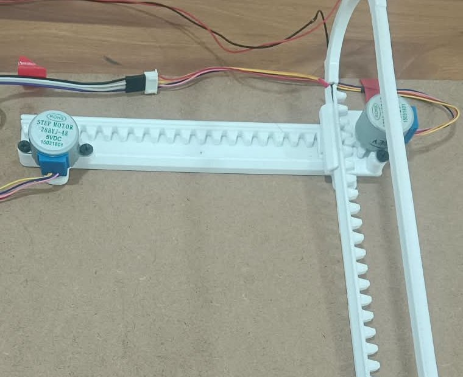
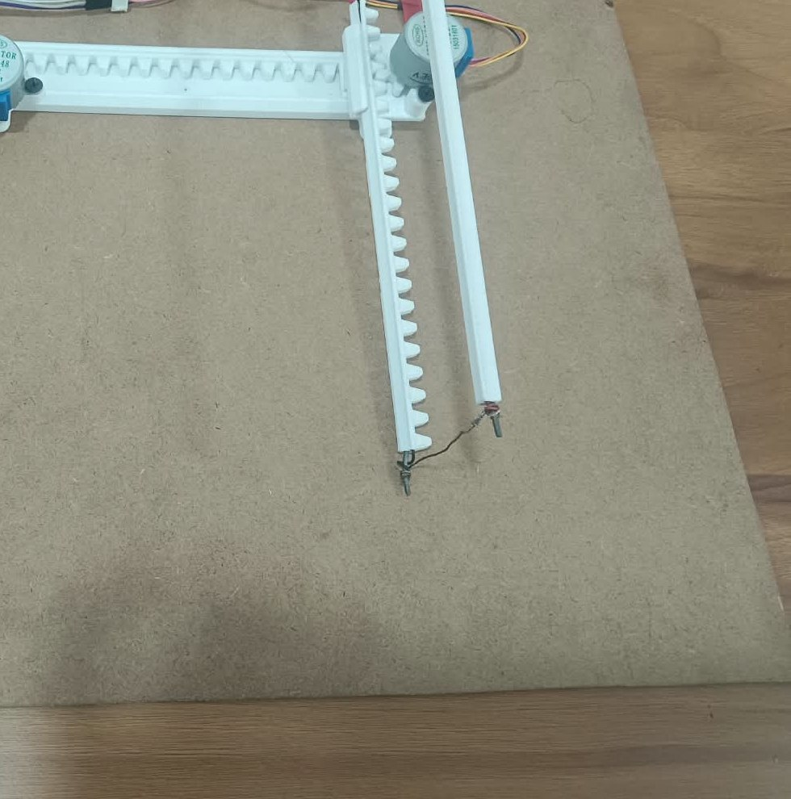
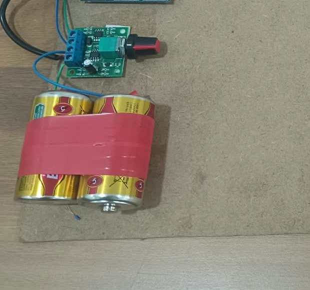
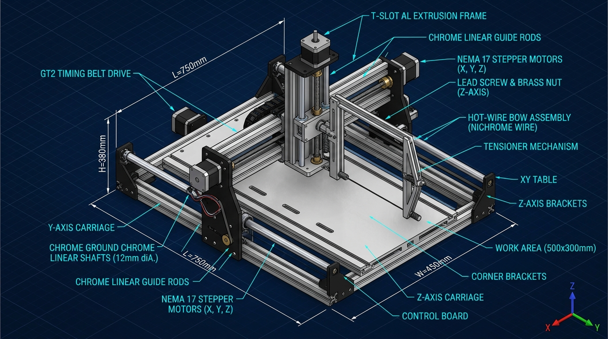
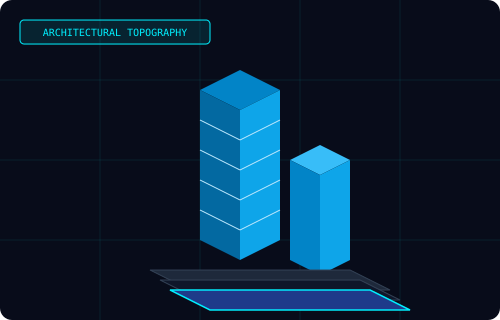

Hands-on Engineering
The project brings mechanical design, printed parts, motion components and controller electronics together as a learning exercise.
Precision Engineering. Smart Automation. Creative Manufacturing.
A Sanjivani University Makerspace project developing a compact foam-cutting prototype. The current build combines printed mechanical parts, stepper motors, a rack-based mechanism and control electronics; complete three-axis motion and heated cutting remain to be verified.

From Engineering Design to Physical Implementation.
"Our Foam Cutting 3-Axis Device is a Makerspace engineering project developed to explore automated foam cutting using a compact mechanical structure, stepper motors and electronic control components."
An undergraduate mechanical engineering project exploring rack-based movement, stepper motors and controller electronics for a compact foam-cutting concept.
The project aims to develop a three-axis foam-cutting device. Its intended design uses X, Y and Z motion with a resistance-wire cutter; the photographed prototype is partially assembled and the complete cutting process has not been verified.
Industrial CNC routers can be costly and oversized for a teaching lab, while hand cutting can be difficult to repeat. This project explores a compact, accessible approach for learning about automated foam cutting and prototyping.
In the intended system, controller signals drive stepper motors and a mechanical transmission converts rotation into linear travel. The prototype photograph shows a CNC shield, plug-in driver modules, motors and racks; exact wiring, axis mapping and motion performance have not been verified.
The intended system aims to reduce manual effort and improve repeatability compared with hand cutting. Smooth edges, reduced material waste, cost savings and cutting time have not been established by the partially assembled prototype.
Sanjivani University Makerspace Innovation Ecosystem
Manual foam fabrication suffers from inherent operational flaws that limit its viability in modern engineering education and precision prototyping.
Cutting foam by hand using utility knives or freehand hot-wire wands requires prolonged physical exertion, steady hands, and continuous concentration, leading to physical fatigue and operator strain.
Fabricating complex contours or multi-layered architectural forms manually takes hours of slow tracing and repetitive trimming, slowing down rapid engineering design cycles.
Achieving true perpendicular bevels, smooth curves, aerofoil profiles, and strict dimensional tolerances is virtually impossible with freehand tools due to hand tremor and wire deflection.
Inconsistent manual feed rates cause localized overheating, resulting in melted voids, scorched edges, or jagged tears that ruin expensive foam stock and increase scrap rates.
Manual cutting cannot reproduce identical parts. When batch manufacturing aerodynamic components or uniform packaging trays, human variability causes unacceptable component differences.
The design objective is to automate foam cutting with controlled motion. Repeatability, cutting performance and accuracy will be established through testing rather than assumed.
The project was designed with six fundamental milestones to make digital fabrication accessible, reliable, and economical.
Build a fully functional three-axis machine utilizing accessible, economical electronic and mechanical components without sacrificing rigid performance.
Program synchronized Cartesian motions along the X, Y, and Z axes through microcontroller firmware, enabling seamless vector contour execution.
Develop and evaluate the rack-and-pinion motion and stepper-motor arrangement. Backlash, positioning accuracy and cut quality remain to be tested on the assembled device.
Transition operators from laborious manual carving to digital machine supervision, substantially cutting fabrication fatigue.
Calibrate cutting speeds and wire temperature to achieve optimal thermal kerf, reducing scrap parts and raw material expenses.
Evaluate repeatability by producing test pieces and comparing their shapes with the intended design.
The intended device translates digital coordinates into three-dimensional Cartesian movements and thermal wire control. The current photograph shows a partially assembled rack-and-motor prototype; full three-axis automated cutting has not been presented as verified operation.
Intended horizontal left and right movement of the cutting mechanism. Complete X-axis travel has not yet been verified on the assembled prototype.
Intended forward and backward movement relative to the work area. The physical mechanism assigned to this axis remains to be confirmed through assembly and testing.
Intended vertical up and down movement. The current prototype photograph does not establish a completed or tested Z-axis.

The controller is intended to generate motor control signals for the prototype's stepper arrangement. Exact pin assignments and the full control sequence are not presented here because they could not be verified from the photograph.
The intended cutting method uses an electrically heated resistance wire rather than a rotating cutting tool. Wire material, operating temperature and heating control will only be described after the assembled circuit and its settings are verified.
Explore the actual mechanical design of our Foam Cutting 3-Axis Device through a model based on the available prototype photo. XY movement is a demonstration only, not physical machine control.
White parts are represented as printed plastic and the brown plate as MDF based on their appearance; exact dimensions, filament, pinion profile, wiring, controller model and power ratings were not available. The model shows two visible motor/rack sections only; it does not claim confirmed machine travel, wire heating, or physical control.
The design intends coordinated movement along three axes. The current build is only partially assembled; full three-axis travel and cutting have not been verified.
The prototype photo shows toothed printed rack members and stepper motors. Rack travel, pinion engagement and repeatability remain to be tested. No travel or accuracy figures are claimed.
Intended horizontal left/right movement.
Intended forward/backward movement.
Intended vertical up/down movement.
Stepper rotation is intended to drive mechanical travel through the selected motion mechanism. A resistance wire is visible in the prototype photograph; its material, heating circuit and cutting operation are not yet verified here.
VIEW SEPARATE CAD CONCEPTComponents below are identified from the uploaded prototype photograph. Only labels readable in the image are stated; unverified model ratings and wiring are intentionally omitted.

The visible blue controller board carries the project's control electronics. The exact board model and configured firmware are not confirmed by the photograph.

The visible stepper motors provide controlled rotational motion for the rack-based mechanism. Their exact final installation, gearing and motion allocation require testing before full-axis specifications are reported.
Motor driver modules interface controller signals with the stepper motors. Exact board ratings and wiring arrangements should be checked before specifying electrical limits.
The red board marked “CNC SHIELD” is visible in the photo. It provides the physical board layout for the installed driver modules; pin mapping and operation are not assumed.

The partially assembled structure uses 3D-printed parts and rack-based motion components. The visible arrangement establishes the intended frame and movement direction, while assembly alignment remains in progress.
The prototype uses printed toothed rack components beside stepper motors. Their exact engagement, travel, backlash and axis assignment require physical testing.
A thin wire is visible between the printed supports. Its material, temperature and electrical heating state cannot be confirmed from the photograph.

The prototype includes a battery/power arrangement and visible external wiring. Exact supply voltage, current capacity and isolation details have not been assumed without measurement or documentation.
The photograph shows motor leads and jumper wiring around the controller and shield. Wire routing, pin assignments and circuit operation are not inferred from this image.
The available annotated assembly render and vector diagrams show a design concept. They are separate from the photographed, partially assembled prototype; individual part renders were not included with the accessible project files.

Existing vector overview of an intended multi-axis assembly. It is a design reference, not a record of the current build.

Separate blue renders for the gear, curved bracket, mount, rack, rail and support assembly were not present in the accessible uploads, so no substitute parts are shown.
The physical prototype uses visible white printed members and rack parts. Do not treat the annotated CAD drawing's frame, motors or rails as installed hardware.
An undated development workflow from concept through integration and testing. The order is a project-stage guide, not a claim about when each activity occurred or its verified completion.
Define the project need and the intended foam-cutting application.
Research suitable mechanical, motion-control and cutting approaches; document assumptions for later testing.
Develop and review a digital design. Available CAD illustrations are shown separately from the photographed physical prototype.
Select components for the controller, motors, mechanical movement and intended cutting system; verify model numbers from part markings.
Develop and fit printed supports and rack components for the intended movement system.
Assemble and align the printed structure, motors, rack mechanism and cutting-wire supports.
Integrate and inspect controller, CNC shield, driver modules, motors, battery arrangement and wiring. Confirm connections before applying power.
Verify each intended axis, wire-heating behavior and safe cutting operation experimentally before describing the system as fully functional.
The accessible files contain one unique prototype photograph, shown whole and in detail crops, plus one annotated CAD assembly. No separate X/Y/Z mechanism, A4988 identification, dated development-stage or part-level CAD photos were supplied. Select an available image to zoom and browse.
These are intended benefits of the design, not measured performance claims.
The project brings mechanical design, printed parts, motion components and controller electronics together as a learning exercise.
The team is exploring an approachable foam-cutting concept for a university Makerspace; cost and cutting performance have not yet been measured.
The intended X, Y and Z layout offers a basis for future assembly and testing. The complete axes are not yet verified on the photographed build.
A successfully developed and validated foam cutter could support educational, prototyping and design activities. These are potential applications, not results demonstrated by the current prototype.

After cutting accuracy and safe operation are validated, a future version could be explored for topography, building mockups and facade study models.

Potential future use includes packaging-fit prototypes and protective inserts, subject to dimensional and material testing.

If coordinated motion and the intended wire cutter are validated, the design could be evaluated for foam profiles used in model-making.
The project can support discussion of mechanical design, stepper systems and controller integration; machine operation remains to be verified.
Possible future experiments include foam lettering, display forms and simple sculpting blanks after safe cutting tests.
A validated build could be assessed for producing foam mockups and early ergonomic forms; no such cutting results are documented yet.
The available records show a partially assembled prototype, not a fully tested foam-cutting machine.
Complete X, Y and Z travel, axis mapping and coordinated movement have not been verified on the assembled device.
Wire heating, temperature control and foam-cutting results are not established by the available photos or tests.
Exact controller and driver models, electrical ratings, pin assignments and verified wiring connections are not confirmed.
Only one unique prototype photo and one CAD assembly render were available. Separate axis, component CAD and dated build-stage images were not supplied.
Strategic engineering enhancements planned for subsequent development iterations to elevate machine autonomy, speed, and capabilities.
Transitioning to dedicated GRBL/Marlin 32-bit CNC controllers with standalone SD card streaming and touch-screen pendant control for computer-free operation.
Implementing independent dual vertical gantry control (X1-Y1 / X2-Y2) to cut tapered aerofoils, sweeps, and non-parallel 3D transition geometries.
Upgrading to NEMA 17 high-torque stepper motors with optical rotary encoder feedback and anti-backlash lead screw nuts for sub-millimeter precision.
Fabricating a heavy-duty extruded aluminum chassis with dual linear rail MGN12 carriages and rigid corner gussets for vibration dampening.
Closed-loop digital PID temperature feedback using an integrated thermistor, hardware emergency stop (E-Stop) interlock, smoke extraction hood, and wireless web telemetry monitoring.
"Together, We Turn Engineering Ideas Into Innovative Solutions."
"Guided by Knowledge. Inspired by Innovation."
Existing project files and design references are provided for review. Firmware, pin mappings and schematic drawings have not been verified against the photographed hardware; check them before connecting or powering components.
Existing project notes. Component values and movement details should be checked against the assembled hardware.
Existing project firmware source. The pin assignments and heater control are not confirmed against the photographed controller or wiring.
See the photographed controller, shield, driver modules and wiring. This is a photo record, not a verified connection diagram.
Existing annotated design render; different from the photographed physical prototype and not a verified build specification.
Loading project firmware source…This Makerspace project is developing a three-axis foam-cutting device through mechanical design, printed parts, rack-based movement and electronics integration. The current prototype photograph records a real, partially assembled build; complete axis operation and heated cutting remain to be tested and documented.
RETURN TO PROTOTYPE